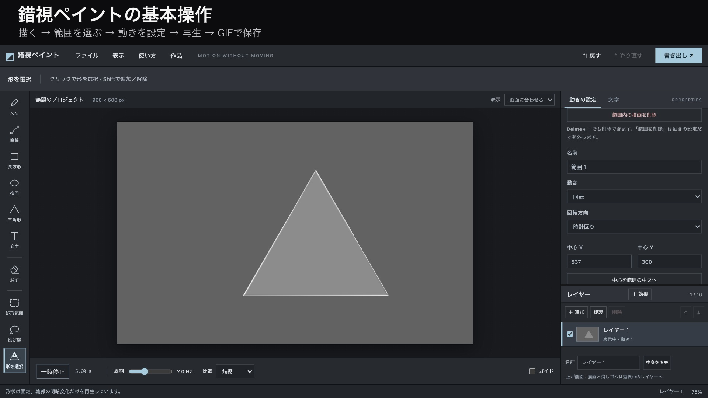

ガイドをオフにするとグリッドも非表示になります。吸着の設定は保持します。投げ縄には吸着しません。
形はそのまま。輪郭の明暗が、動きを生み出します。
表示中のレイヤーを合成します。ガイドは出力されません。
GIF・APNGはループが滑らかになるよう長さを周期に合わせます。動画はブラウザに応じてMP4またはWebMになります。
形式と長さを選び、書き出してください。

配置元の形を1つ選択し、「パスに沿って配置」を押します。ベジェ・自由曲線・折れ線・直線・楕円でパスを描き、個数または中心間の間隔、回転、サイズを調整して「配置を確定」を押してください。元の形を残して複製し、必要に応じて動きの設定も複製します。
ツール設定はこのブラウザに自動保存されます。線幅・線の端・図形・文字書式と入力内容・読み込んだフォント・表示倍率・グリッド・書き出し設定を、再読み込み後も復元します。同じURLまたは同じ場所のHTMLファイルでお使いください。描画や範囲ごとの動きは、プロジェクトを保存してください。
動きの範囲のチェックを複数オンにすると、動き・方向・強さ・有効／無効を一括変更できます。⌘／Ctrl＋クリックで追加・解除、一覧ではShift＋クリックで連続選択、選択済みの項目を再クリックすると解除できます。キャンバスではShift＋クリックで追加・解除できます。複数選択時は全体を囲む外接矩形を表示します。「全レイヤーを表示」でレイヤーをまたいで選べます。異なる設定は「複数の値」と表示し、変更した項目だけを適用します。
直線ツールの「線の端」で丸・角・矢印を切り替えられます。矢印はドラッグの終点を向きます。設定は次に描く直線に適用されます。
「形を選択」（W）で線や塗り部分をクリックすると、つながった描画の外周を選択できます。三角形・楕円や読み込んだ画像にも使えます。輪郭の内側も選択に含みます。同じレイヤーで線が接している形は一緒に選択されます。図形ツールの「描画後に形を選択」をオンにすると、描いた直後に選択できます。
レイヤー欄の「＋ 効果」で、キャンバス全体のコントラストを調整できます。チェックでオン・オフ、0で元の見た目に戻ります。設定はプロジェクトに保存され、GIF・APNG・動画にも反映されます。
選択後に「選択範囲を変形」を押すと、枠内のドラッグで移動、四隅で拡大縮小、上のハンドルで回転できます。描画も一緒に変形するか、選択枠だけかを選べます。「戻す」で復元できます。
Shift＋ドラッグ：ペンは直線、直線ツールは水平・垂直、長方形は正方形、楕円は正円、三角形は正三角形。「表示」メニューでグリッド表示と吸着を切り替えられます。
矩形範囲・投げ縄で囲み、「範囲内の描画を削除」またはDeleteキーで、選択中レイヤーの描画だけを消せます。「戻す」で復元できます。
回転は、歯・突起・中心から離れた模様があると見やすくなります。真円の輪郭だけでは回転信号がほとんど生まれません。範囲は図形全体と少しの余白を囲みます。「点滅だけ」で方向信号を消して比較できます。
描画レイヤーは最大16枚。文字や図形を別々に描き、レイヤーごとに動きを設定できます。消しゴムは選択中のレイヤーだけに作用し、非表示レイヤーは出力されません。同じレイヤー内で重なる範囲は、一覧の下にある設定が優先されます。読み込んだ画像はこのブラウザ内だけで処理します。作品の再編集にはプロジェクトを保存してください。